Bienvenue sur mon portfolio
Un lieu où j'exprime toute ma créativité
BIENVENUE
Bonjour, je suis Guilhem Le Meur, étudiant en BUT MMI à Lannion.
2020… drôle d’année n’est-ce pas ? Pour moi, ce fut un tournant. Mon premier projet, ma
première
rencontre avec le domaine de la communication. Cette première expérience m’a donné le goût
de
créer, de fédérer et de porter des projets qui ont du sens.
Ce qui m’anime dans ce monde, c’est comprendre les gens, apporter des solutions et
explorer
de
nouveaux horizons. J’aime travailler en équipe, relever des défis et nourrir ma curiosité
notamment à travers ma passion pour la langue et la culture chinoises. Je m’investis
également
au sein d’une association qui accompagne des créateurs et des marques (Youtubeurs, équipes
e-sport, marques de vêtements…) dans le lancement et le développement de leurs projets.
Mon parcours en BUT MMI nourrit aujourd’hui ma réflexion et m’aide à construire un
projet
professionnel tourné vers la créativité, la communication et l’innovation. Je suis
actuellement
à la recherche d’une alternance afin de continuer à apprendre et contribuer à des projets
riches
de sens.
Bonne lecture et au plaisir d’échanger avec vous !
Formation
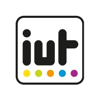
Bachelor universitaire de technologie
Métiers du Multimédia et de l’Internet
IUT de Lannion (22)
Communication, marketing, audiovisuel, gestion de projet, UX/UI, développement web, graphisme
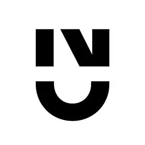
Licence 1
Géographie et Aménagement – 2025
Université de Nantes (44)
Cartographie, géopolitique, archéologie, histoire, sciences de la Terre, sciences sociales
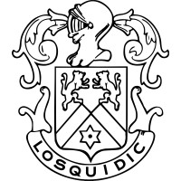
baccalauréat série générale – 2024
Saint-Joseph du Loquidy - Nantes (44)
Spécialités : Histoire-géographie, géopolitique et sciences politiques / Sciences économiques et sociales
Compétences
Marketing et gestion de projet
- - Déterminer des objectifs et planifier des tâches
- - Réaliser des sondages auprès d’un public
- - Rédiger un cahier des charges et réaliser des livrables
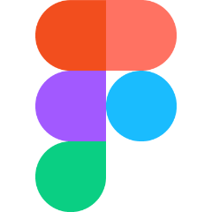
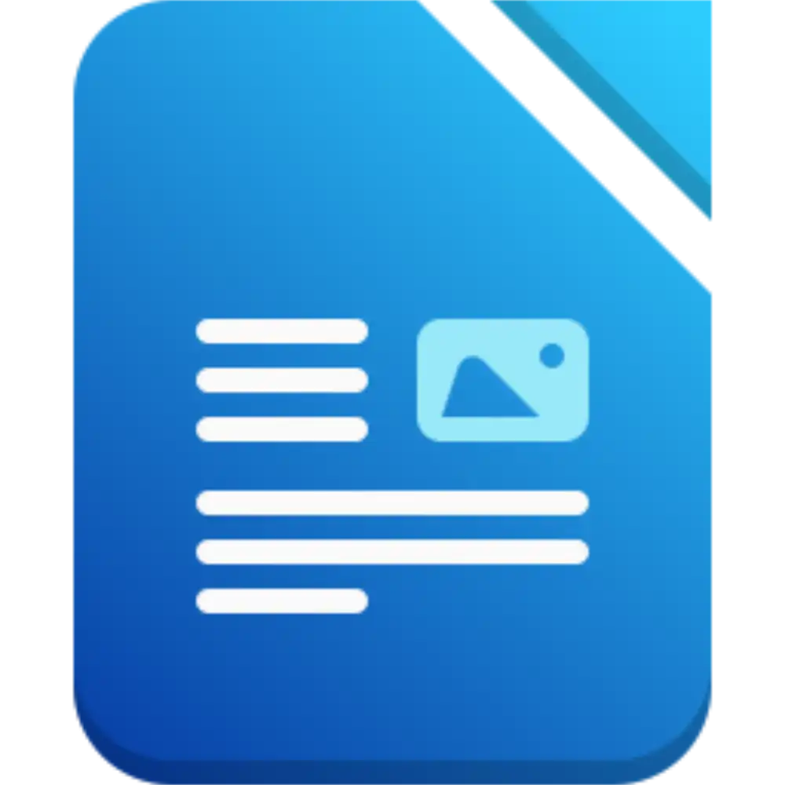
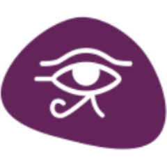
UX / UI
- - Auditer des organisations et des interfaces numériques
- - Concevoir des fiches personas
- - Formuler des recommandations UX à partir des tests utilisateurs
Communication
- - Auditer une communication numérique
- - Élaborer une stratégie de communication (plan d’action, charte éditoriale, communiqué de presse)
- - Créer des contenus de communication
Design et création graphique
- - Rechercher des idées graphiques
- - Produire un visuel numérique (affiches)
- - Travailler avec des outils de création vectorielle et de traitement d’image
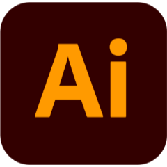
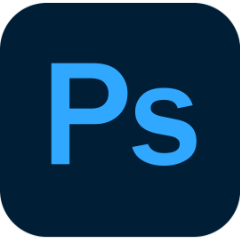
Audiovisuel
- - Concevoir la structure narrative d’un film (scénario / script / storyboard...)
- - Enregistrer une prise de vue vidéo
- - Monter un film à partir de rushes
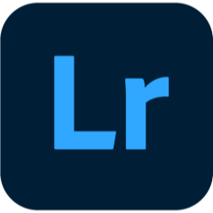
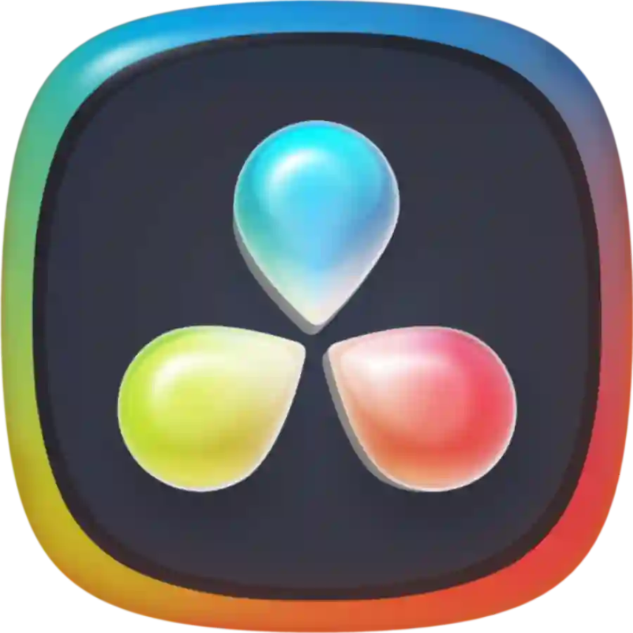
Développement web
- - Rechercher des thèmes esthétiques
- - Maquetter un site web
- - Structurer une page web
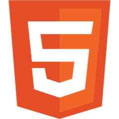
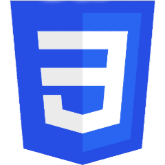
Projets
Projets Étudiants
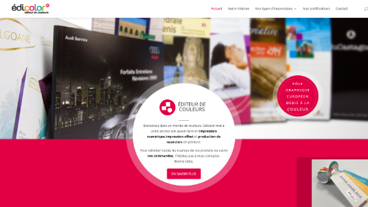
Audits de l’organisation Édicolor
Contexte :
Dans le cadre d’un projet universitaire en MMI, j’ai réalisé une série d’audits de l’entreprise d’impression et de création de nuanciers Édicolor. L’objectif consistait à découvrir les méthodes et les outils pour mener ces audits de manière professionnelle et apprendre à rédiger desrapports d’audit.
Étapes de travail :
- 1. Audit de contexte
- 2. Audit économique
- 3. Audit sémiologique
- 4. Audit de l’architecture de l’information
- 5. Audit d’accessibilité et d’ergonomie
- 6. Audit du trafic, des visites et des comportements
Compétences mobilisées :
- - Produire des analyses statistiques descriptives et les interpréter
- - Évaluer un contexte socio-économique
- - Gérer un projet en équipe
- - Analyser des formes médiatiques et leur sémiotique
Outils : Figma / LibreOffice Writer / Google Docs / Canva / analyse SWOT / PESTEL
Bilan personnel :
J’ai appris à utiliser les outils et les méthodes d’analyse d’une organisation réelle. J’ai également développé mes compétences pour produire des recommandations en relation avec les valeurs et la cible de l’organisation. J’ai ainsi retenu l’importance pour une organisation de réaliser plusieurs audits sur différents thèmes afin d’assurer son positionnement.
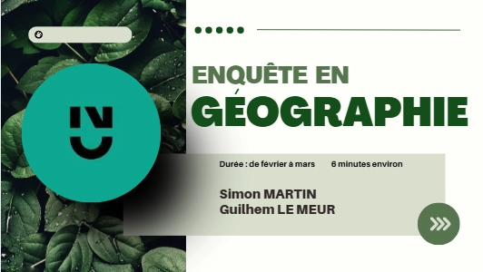
Enquête sur l’utilisation des espaces verts
Contexte :
Dans le cadre d’un projet universitaire en licence de géographie et aménagement, j’ai réalisé une enquête auprès des étudiants et du personnel de l’université de Nantes sur l’utilisation des espaces verts du campus. L’objectif consistait à réaliser une démarche professionnelle dans le cadre d’un sondage et d’analyser les données pour obtenir des résultats.
Étapes de travail :
- 1. Élaboration d’un brainstorming
- 2. Recherche et mise au brouillon de questions potentielles
- 3. Travail sur la structure du questionnaire
- 4. Réalisation du questionnaire auprès des publics cibles
- 5. Analyse et interprétation des résultats
- 6. Présentation des résultats auprès du commanditaire (université de Nantes)
Compétences mobilisées :
- - Construire un questionnaire professionnel
- - Communiquer un questionnaire et prendre en note les résultats
- - Analyser et interpréter les réponses au questionnaire
- - Travailler en équipe
Outils : Excel / Sphinx / Google Form / Google Docs
Bilan personnel :
J’ai appris les différentes étapes qui composent la réalisation d’un questionnaire. J’ai également travaillé mes compétences rédactionnelles afin d’optimiser les questions pour une compréhension immédiate par les sondés. J’ai ainsi retenu l’importance de la variété des questions afin de construire une enquête réaliste et structurée.
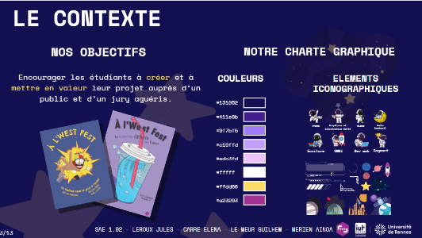
Plan de communication pour À l’West Fest
Contexte :
Dans le cadre d’un projet universitaire en MMI, j’ai réalisé une stratégie de communication fictive pour le festival « À l’West Fest ». Cet évènement met en valeur les meilleurs projets des étudiants MMI de l’IUT de Lannion. L’objectif consistait à proposer une recommandation marketing et un plan de communication pour accompagner le repositionnement du festival et assurer sa promotion.
Étapes de travail :
- 1. Réalisation d’un audit de positionnement de l’évènement
- 2. Création d’une recommandation pour contribuer à positionner le festival et son fonctionnement
- 3. Mise en place d’un plan d’action (objectifs, moyens de communication, charte graphique, calendrier d’action)
- 4. Élaboration de prototypes de communication (vidéos promotionnelles, affiches, posts…)
- 5. Rédaction d’un communiqué de presse et recherche de partenaires pour l’évènement
- 6. Présentation du plan d’action face au commanditaire (responsable MMI)
Compétences mobilisées :
- - Proposer une recommandation marketing (cibles, objectifs, points de contact)
- - Proposer une stratégie de communication
- - Travailler en équipe
Outils : DaVinci Resolve / CapCut / LibreOffice Writer / Google Docs / Canva
Bilan personnel :
J’ai appris la démarche d’un plan de communication structuré avec ses différentes étapes. J’ai également travaillé plusieurs domaines lors de ce projet, allant de la rédaction au montage vidéo. J’ai ainsi retenu l’importance d’établir une communication globale, qui s’articule à travers divers canaux de diffusion et qui se déploie sur la durée.
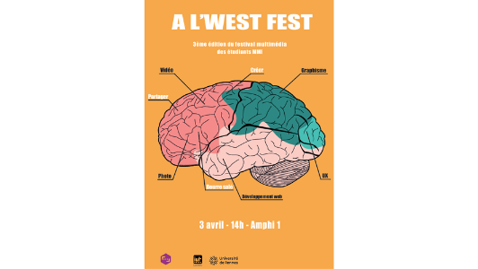
Affiche À l’West Fest
Contexte :
Dans le cadre d’un projet universitaire en MMI, j’ai réalisé l’affiche promotionnelle destinée au festival « À l’West Fest ». Cet évènement met en valeur les meilleurs projets des étudiants MMI de l’IUT de Lannion.
Étapes de travail :
- 1. Recherche d’existants sur 5 styles différents : illustration, photographie, typographie, éphémère, mixte
- 2. Mise en forme d’un brainstorming représentant MMI (valeurs, actions, objets) et des idées graphiques et des références qui y sont liées.
- 3. Conception de maquettes sur papier à partir des idées développées dans le brainstorming
- 4. Création des premiers tests sur logiciel
- 5. Réalisation de recherches graphiques et de hiérarchie de l’information
Compétences mobilisées :
- - Produire des pistes graphiques et des planches d’inspiration
- - Créer et composer des visuels
Outils : Adobe Illustrator / Adobe Photoshop
Bilan personnel :
J’ai développé mes compétences avec les logiciels Illustrator et Photoshop. J’ai également travaillé sur la recherche de composition d’une affiche en réalisant de nombreuses expérimentations. J’ai ainsi retenu qu’une affiche demande de la patience et de la réflexion, et que chaque test ou idée est essentiel pour obtenir un résultat efficace.
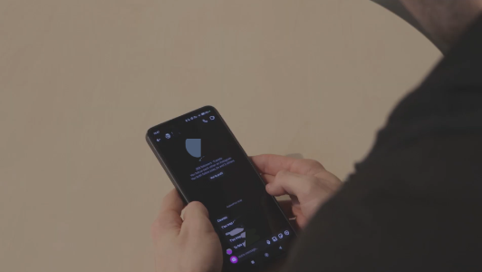
Film contre le cyberharcèlement
Contexte :
Dans le cadre d’un projet universitaire en MMI, j’ai écrit, tourné et monté un film de sensibilisation contre le cyberharcèlement. L’objectif était de découvrir le monde de la réalisation d’une fiction cinématographique.
Étapes de travail :
- 1. Réalisation des éléments d’écriture qui composent un film (brainstorming, concept, pitch, synopsis, scénario, déclinaison du concept en campagne, note d’intention)
- 2. Rédaction de la note de traitement, du storyboard, de l’adaptation du script en anglais, de la shotlist et des informations de tournage
- 3. Tournage du film avec utilisation de matériel professionnel
- 4. Montage du film sur DaVinci Resolve
Compétences mobilisées :
- - Écrire pour les médias numériques
- - Tourner et monter une vidéo (scénario, captation d’image et de son…)
- - Travailler en équipe
Outils : DaVinci Resolve / caméra CANON 90D + 50mm + 18-135mm, trépied MANFROTTO, perche, micro NTG2 avec Rycote, mixette Zoom F6, casque audio
Bilan personnel :
J’ai découvert le monde de la production cinématographique en m’exerçant au maniement d’une caméra ainsi qu’à l’utilisation d’une perche pour la prise de son. J’ai ainsi retenu que la réussite d’un film repose sur une préparation minutieuse, une organisation rigoureuse et une coordination efficace.
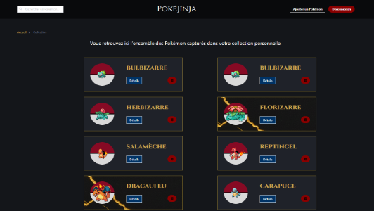
Site web Pokémon type pokédex
Contexte :
Dans le cadre d’un projet universitaire en MMI, j’ai développé et publié un site web qui simule la gestion d’une collection de Pokémon par un dresseur. L’objectif consistait à développer nos compétences en développement web en particulier à l’aide du framework Bulma.
Étapes de travail :
- 1. Composition d’une planche univers
- 2. Réalisation de maquettes basse fidélité et haute fidélité
- 3. Développement du site Pokémon à partir de la maquette
- 4. Dépôt du site Pokémon sur un serveur de l’IUT
Compétences mobilisées :
- - Générer des pages web à partir de données structurées
- - Produire des pages web fluides avec des interactions simples
- - Mettre en ligne un site web en utilisant une solution d’hébergement
Outils : HTML5 / CSS3 / Bulma / VS Code / Figma
Bilan personnel :
J’ai découvert tout le travail qui précède la création d’une interface web (recherches esthétiques, maquettage...). J’ai également développé mes compétences en mise en forme web grâce à l’utilisation du framework Bulma. J’ai ainsi retenu que la préparation et la structuration d’un projet web sont essentielles pour garantir un site fonctionnel et esthétique.
Projets Personnels
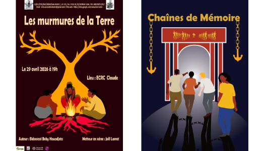
Affiches de pièces de théâtre béninoises
Date du projet : 2026
Contexte :
Dans le cadre d’un projet personnel, j’ai réalisé 2 affiches promotionnelles pour 2 pièces de théâtre béninoises. L’objectif était de concevoir des affiches dans un style esthétique simple afin de transmettre un message clair et précis à toutes les personnes quel que soit leur âge ou leur langue.
Étapes de travail :
- 1. Recherche sur la culture béninoise afin d’inscrire pleinement les affiches dans cette culture.
- 2. Réalisation de maquettes sur papier à partir des premières idées.
- 3. Conception de maquettes et recherche graphique tout en communiquant efficacement avec le commanditaire.
- 4. Ajout de métaphores issues des pièces pour rester dans le même style d’écriture que ces dernières.
- 5. Travail autour de la hiérarchie de l’information.
Compétences mobilisées :
- - Produire des pistes graphiques et des planches d’inspiration
- - Créer et composer des visuels
Outils : Affinity
Bilan personnel :
J’ai développé mes compétences avec le logiciel Affinity. J’ai également travaillé sur la recherche de composition tout en restant dans le thème métaphorique des pièces. J’ai aussi découvert le travail avec un vrai commanditaire et l’importance de communiquer avec ce dernier.
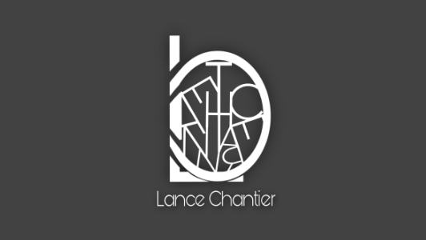
Association Collectif Lance Chantier
Date du projet : 2020 / 2025
Contexte :
Dans le cadre d’un projet personnel, j’ai créé une association nommée « Collectif Lance Chantier » composée de 8 membres dans laquelle j’ai réalisé différentes missions telles que la gestion d’équipe ou encore la communication sur les réseaux sociaux tels que Instagram ou YouTube.
Étapes de travail :
- 1. Répartition des membres d’équipe sur les différents livrables à fournir
- 2. Gestion du planning des livrables et contrôle de la qualité
- 3. Communication lors de la livraison d’un nouveau projet à un client
Compétences mobilisées :
- - Gérer une organisation
- - Travailler en équipe
Outils : Discord, Instagram, YouTube, Excel
Bilan personnel :
J’ai découvert le rôle de chef d’équipe dans un contexte associatif. J’ai également appris le sens des responsabilités et de la prise d’initiative. J’ai ainsi retenu que la réussite d’un projet associatif repose sur une organisation structurée, une répartition claire des missions et une communication efficace entre les membres.
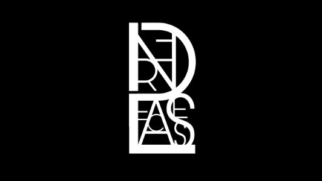
Association Lance Presse
Date du projet : 2024
Contexte :
Dans le cadre d’un projet personnel, j’ai créé une association à but non lucratif nommée « Lance Presse » composée de 6 membres dans laquelle j’ai réalisé différentes missions telles que la rédaction d’article de presse, la gestion d’équipe ou encore la relation avec les partenaires.
Étapes de travail :
- 1. Recherche d’informations auprès de sources fiables
- 2. Rédaction d’articles sur divers sujets (géopolitique, sportif, cinématographique, littéraire)
- 3. Publication et diffusion des articles sur le serveur Discord
Compétences mobilisées :
- - Sélectionner l’information et vérifier sa source
- - Rédiger un article de façon claire et précise
Outils : Discord, journaux d'informations
Bilan personnel :
J’ai développé mes compétences rédactionnelles et de synthèse grâce à ce projet. J’ai également appris à rechercher des partenaires et à maintenir le lien avec ces derniers. Ce projet a amélioré mon esprit critique et m'a appris l'importance de bien sélectionner les informations ainsi que de les croiser avec plusieurs sources afin de bien les comprendre et de les transmettre au mieux au public.
cv
Maintenant que vous me connaissez davantage, plus qu'à télécharger et lire mon CV !
Mon CV